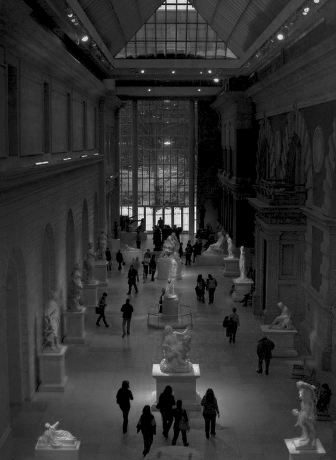
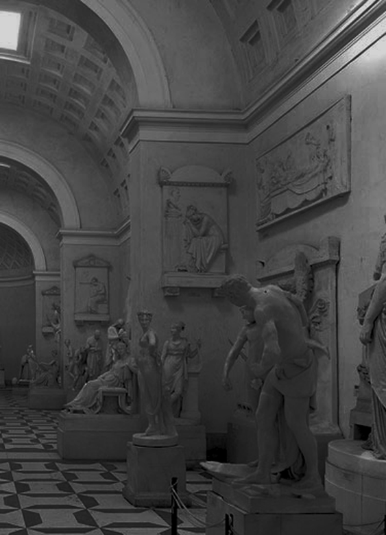
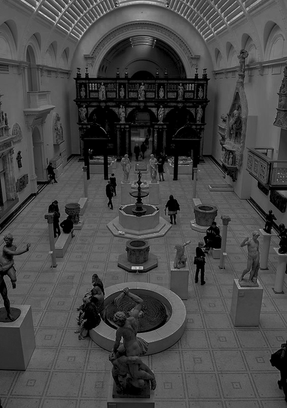

Welcome to our Sculpture Art Museum. SAM was founded by people with a special interest in sculpture in order to spread the passion for this art closer to the community and also to protect this special art from being destroyed oblivion.
ABOUT SAM
SAM is a place to honor sculptures around the world. Come to sam you will admire the creations of humanity and understand more about them. SAM is committed to preserving, interpreting, and enriching its collections and renowned sculpture garden; offering innovative experiences for learning and interpretation; and uniting, inspiring, and engaging diverse and cultures.
SPACE
OF
THE MUSEUM
ROOM 1
“Societies in the
renaissance period”
ROOM 2
“Wars in the age of innovation”
ROOM 3
“The beauty of humanity by the standards”
Explore Art
FROM OUR SCULPTURES
DISCOBOLUS
OF MYRON
The Discobolus or “discus thrower” is one of the most iconic artworks of classical antiquity. Originally sculpted in bronze by an Athenian man called Myron (born in the fortress-city of Eleutherae in the 5th century BC), the statue has gained fame largely through its many bronze and marble copies made by the Romans.
The sculpture was well-known in the ancient world. The Roman rhetorician and satirist Lucian of Samosata (c. AD 125 – c. AD 180) mentioned Myron in a work called Philopseudes.
PIETRO GUARNERIO
Bust of Lady
Pietro Guarnerio was born in Laveno, Varese, and studied at the Brera Academy in Milan, the city where he was principally to work. He specialised in portrait and funerary works as well as narrative genre scenes, of which his well-known model Forced Prayer is a typical example. While active almost exclusively in Milan, for whose Duomo he executed several works, Guarnerio exhibited widely outside the city, including in Turin in 1870 and in London in
1872 and 1873.
CUSTOMER REVIEWS
Please tell us what you need and send us messages
so we can improve in the future.